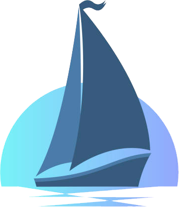
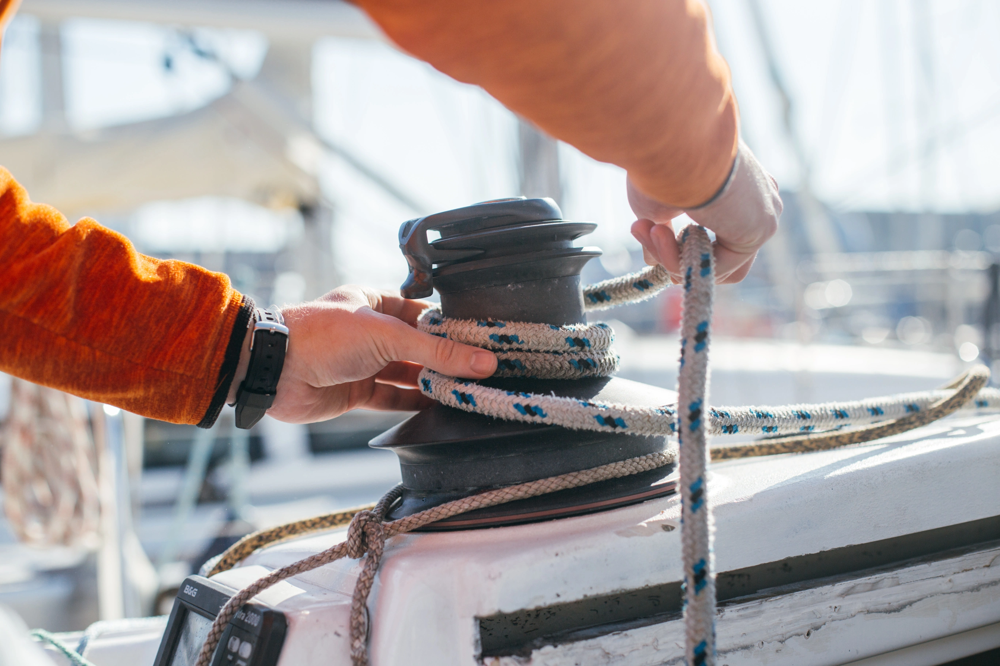

La voile ou le nautisme, est à la base un moyen de transport et de cargaison qui utilise le vent pour avancer. Utilisé même dans l’antiquité, depuis cette époque le domaine a beaucoup évolué, différents types de voiles et de coques ont été
confectionnés. De nos jours, les bateaux à voiles sont moins utilisés pour l’importation et l’exportation. Il est passé d’un moyen de transport à un sport d’équipe où la communication est un des éléments les plus importants.


Comment ça marche ?
Un bateau à voile avance grâce à la différence de pression faite par le vent dans le creux des voiles, à peu près comme les ailes d'un avion. Mais ça ne se fait pas tout seul, l'équipage doit régler les voiles pour que cet effet physique
soit possible. Dans les compétitions, les réglages doivent être le plus optimisés possible. Chaque km/h compte, sauf que dans le domaine on utilise les nœuds comme unité de mesure pour la vitesse et les miles nautique pour la distance.
Équilibrer le poids sur le bateau est aussi très important pour avoir un maximum de vitesse. Pour la voile de plaisance, tout est plus simple, car il n'y a pas besoin d'optimiser tous les réglages ni l'équilibre du bateau.
Différents domaines
Les voiles ne sont pas utilisées seulement sur des bateaux. Il existe aussi des planches à voile, qui utilisent le même principe que les bateaux, mais on y trouve des grandes différences. Par exemple, on peut modifier l’angle du mât par rapport
à la planche pour changer la direction de la planche. Il y a aussi le kitesurf, avec toujours le même effet physique, une voile en arc de cercle plus petit qu’un parapente qui propulse le kitesurfeur sur la planche. Depuis une quarantaine
d’années, un nouveau système a commencé à avoir du succès : le foil. Une aile au niveau de la quille positionnée de façon à faire décoller l’engin aquatique dont il fait partie.